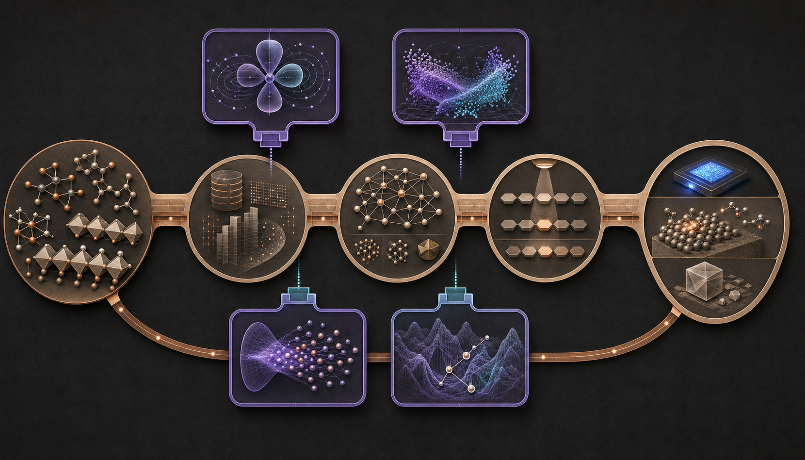
재료 역설계는 목표 물성과 제약을 정하고, 자료와 후보공간을 만들고, 빠른 대리모델과 DFT·양자화학·분자동역학 계산으로 후보를 평가한 뒤, 합성·소자·공정 실험에서 확인하는 폐루프입니다. 계산과 실험에서 얻은 실패 이유는 다음 후보 생성과 모델 학습으로 돌아갑니다. 이 기존 파이프라인은 이미 강하며, 양자컴퓨팅의 가치는 그중 비용과 불확실성이 집중되는 계산을 얼마나 개선하는가로 판단해야 합니다.
현재의 재료 역설계는 강한 고전 폐루프에서 출발합니다
실제 프로젝트의 순서는 분야마다 조금씩 다르지만 계산 계약은 비슷합니다. 문제정의 단계에서 목표 물성, 합성·안전·원가·공정 제약과 검증법을 고정합니다. 자료와 표현 단계는 구조, 조성, 계산조건과 측정값의 계보를 맞춥니다. 후보 생성과 빠른 예측이 탐색 범위를 줄이고, DFT·TDDFT·post-HF·MD 같은 고정밀 계산이 전자상태와 물성을 다시 판정합니다. 다목적 선별과 실험 설계는 제한된 계산·합성 예산을 어디에 쓸지 정하며, 실제 측정이 마지막 기준이 됩니다.
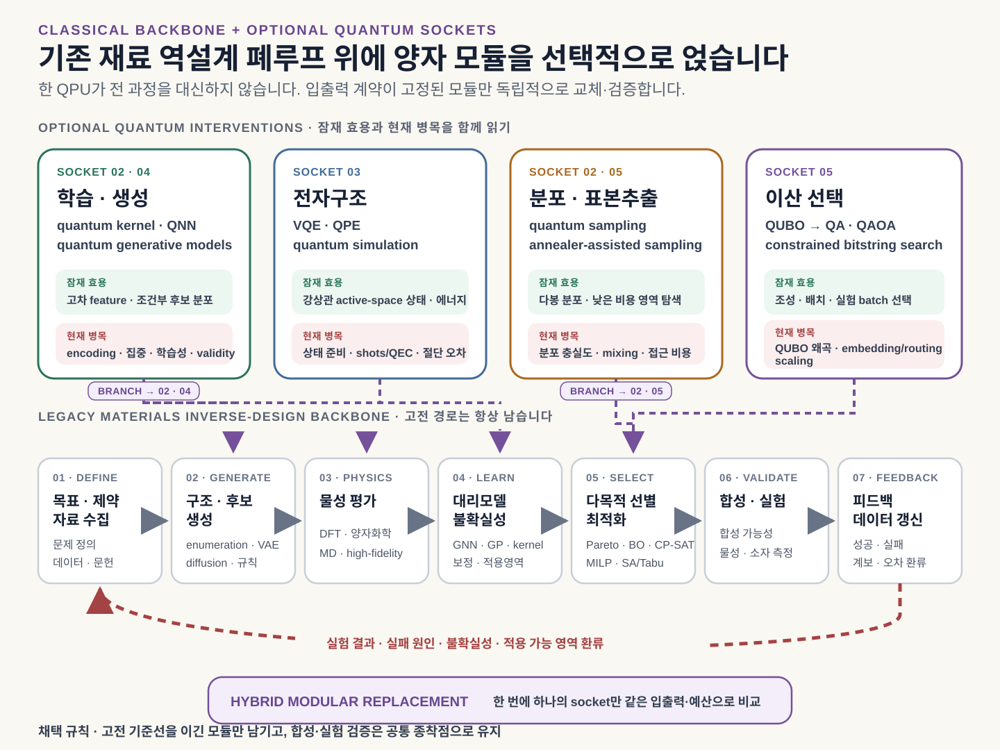
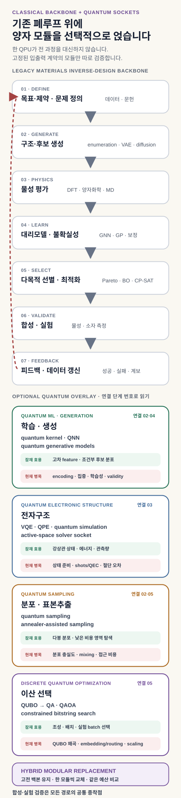
이 지도에서 QPU 적용 문제는 어떤 입력을 받아 어떤 출력을 더 잘 만들 것인가로 정의됩니다. 촉매, 배터리, 고분자, 반도체와 발광재료는 서로 다른 물성과 검증법을 쓰지만, 계산 경계를 입력·출력·오차·비용으로 고정하는 방법은 그대로 적용할 수 있습니다.
전자구조·학습·표본·선택은 서로 다른 양자 해법을 요구합니다
강한 상관이나 여기상태를 다루는 고정밀 전자구조 계산은 후보당 비용이 크고, 자료가 적은 영역의 대리모델은 계열 밖 예측에서 흔들립니다. 생성모델과 Markov chain은 복잡한 후보 분포를 충분히 덮지 못할 수 있고, 다목적 제약이 늘어나면 실험 batch와 조성·치환기 선택이 큰 조합문제가 됩니다. 각 병목에는 서로 다른 양자 해법이 대응합니다. 전자구조에는 VQE(Variational Quantum Eigensolver)와 QPE(Quantum Phase Estimation), 물성 학습에는 quantum kernel과 양자신경망(QNN), 후보 생성과 표본추출에는 QCBM·QBM과 annealer, 이산 선택에는 quantum annealing(QA)과 QAOA(Quantum Approximate Optimization Algorithm)를 각각 시험할 수 있습니다.
| 기존 계산의 병목 | 양자 후보 | 기대하는 국소 효용 | 첫 검증과 비용 누수 |
|---|---|---|---|
| 고정밀 전자구조·여기상태 | VQE·qEOM, QPE와 Hamiltonian simulation | 큰 상관 전자 상태를 직접 표현하고 에너지·관측량을 추정 | 검증: 같은 geometry·basis·active space에서 DMRG·selected CI와 비교 비용: active space, 상태 준비, shots·측정, 긴 회로와 오류보정 |
| 자료가 적은 물성·불확실성 학습 | quantum kernel, QNN, quantum reservoir | 양자 feature map과 회로의 귀납편향으로 유용한 표현을 만들 가능성 | 검증: 같은 scaffold·composition split과 budget에서 GNN·GP·고전 kernel 비교 비용: 자료 encoding, kernel concentration, trainability, shot noise |
| 복잡한 후보 분포 생성·표본추출 | QCBM·QBM, annealer-assisted sampling | 상관·다봉 분포에서 유효하고 다양한 표본을 집중적으로 얻을 가능성 | 검증: 같은 자료·energy model에서 VAE·diffusion 또는 MCMC·parallel tempering 비교 비용: 분포 보정, mode coverage, decoder validity, 표본당 전체 비용 |
| 제약이 많은 이산 선택 | QUBO를 푸는 QA·QAOA | tunneling·interference와 문제 맞춤 mixer로 feasible bitstring에 확률을 모을 가능성 | 검증: 같은 QUBO 문제군에서 exact·CP-SAT·MILP·SA·Tabu와 비교 비용: 정식화 왜곡, penalty·ancilla, embedding·routing, 고전 후처리 |
국소 효용은 양자 메커니즘과 직접 연결돼야 합니다
전자구조 문제는 원래 양자 상태이므로, qubit의 중첩과 얽힘을 이용해 determinant coefficient를 하나씩 저장하지 않고 correlated state를 준비할 수 있습니다. QPE는 Hamiltonian evolution에서 누적된 위상을 읽어 에너지를 추정하고, 이상적인 조건에서는 독립 표본평균과 다른 정밀도 의존성을 가집니다. 이 힘은 좋은 초기상태와 Hamiltonian simulation을 효율적으로 구현할 수 있을 때 나타납니다.
QML과 양자 생성모델은 회로가 만드는 feature space와 확률분포를 사용합니다. 재료 자료에서 고전 모델이 쉽게 모사하지 못하는 표현이나 분포를 만들 수 있다는 가설이 출발점이며, qubit 수나 Hilbert space의 크기만으로 예측 이득이 생기지는 않습니다. QA와 QAOA도 같은 원칙을 따릅니다. 터널링 또는 cost·mixer 간섭이 해당 문제의 장벽과 제약 구조에 맞을 때 좋은 해의 확률이 높아질 수 있으며, 모든 조합최적화에 공통인 우위는 아닙니다.
현재 공개 연구는 소형 문제와 인터페이스를 검증하고 있습니다
기존 파이프라인을 당장 걷어낼 수 없는 이유는 큐비트 수 하나로 설명되지 않습니다. 전자구조에서는 basis·embedding·active-space 편향과 필요한 관측량의 측정비용이 남습니다. QML과 생성모델에는 고전 자료를 양자상태로 넣는 비용, 학습성, 유효한 분자·구조로 되돌리는 decoder가 필요합니다. QA·QAOA는 원래 목적함수와 제약을 QUBO로 옮기는 동안 순위가 왜곡될 수 있고, embedding·routing·후처리가 solver 이득을 소모합니다. 모든 트랙에서 고전 알고리즘도 계속 개선되며, 합성·소자·공정 실험은 양자 결과를 자동으로 신뢰하지 않습니다.
현재 증거로 주장할 수 있는 범위는 고정된 계산 경계에서의 재현 가능한 국소 이득입니다. 재료 역설계 전체의 양자우위는 아직 종단 검증이 필요한 가설입니다. 뒤의 VQE·QPE, QML, 표본추출, QA·QAOA 절은 각각 입력과 출력, 힘의 원천, 이득을 소모하는 비용, 첫 검증 문제를 같은 기준으로 살펴봅니다.
양자 파이프라인은 이 서브루틴의 입력을 만들고 QPU 작업·측정·오류제어·후처리·고전 fallback과 재료 검증을 연결하는 실행 계층입니다. 하나의 QPU가 네 계산을 모두 맡는 구조를 뜻하지 않습니다.
양자 모듈의 채택 조건 — 같은 입력, 정확도와 전체 검증 예산을 받은 강한 고전 방법보다 재검증 통과 후보를 더 많이 남기거나, 같은 품질에 필요한 시간·비용을 낮출 때만 기존 모듈을 교체합니다.
전환은 계산 경계를 분해하고 한 단계씩 다시 연결합니다
- 기준선과 계산 경계를 고정합니다. 자료 준비부터 재검증까지의 시간·비용을 계측하고, geometry·integral·active space, 재료 split, energy model 또는 QUBO 가운데 하나의 입력·출력과 오차 예산을 동결합니다.
- 한 모듈을 shadow mode로 검증합니다. 기존 결과를 실제 의사결정에 사용하면서 작은 active-space VQE, 고정 energy model의 annealer 표본추출 또는 제한된 QUBO의 QA·QAOA 결과를 나란히 기록합니다. 이후 문제 크기·상관 난도·제약밀도를 늘려 강한 고전 해법과 전체 비용을 비교합니다.
- 미공개 후보와 반복 폐루프로 확장합니다. 고정밀 계산 또는 실험의 blind test에서 이득이 확인되고 여러 batch에서 반복될 때만 모듈을 폐루프에 연결합니다. QPE와 QAE는 초기상태·oracle·논리 큐비트를 포함한 자원추정을 먼저 통과해야 합니다.
오류보정 이후에는 계산 가능한 설계공간의 경계가 달라질 수 있습니다
이 단계들이 완성될 경우 장기적으로 가장 큰 변화는 연구 가능한 문제의 범위에서 나타납니다. 현재 비용 때문에 소수 후보에만 적용하는 상관 전자·여기상태 계산을 더 넓은 후보군의 고정밀 판정에 사용하고, 다봉 후보 분포와 불확실성을 유지한 채 다음 계산과 실험을 선택하며, 실패 자료를 즉시 다음 탐색에 반영하는 폐루프를 만들 수 있습니다. 같은 계산·합성·소자 예산에서 더 다양하고 검증된 후보를 남기고, 지금은 계산비용 때문에 일찍 제외하는 설계공간을 탐색 대상으로 되돌리는 것이 종단 목표입니다.
이 목표는 현재 달성된 성과가 아닙니다. 오류보정 하드웨어, 효율적인 상태·oracle 준비, 반복 가능한 문제군 scaling과 전향적 재료 검증이 함께 성립해야 합니다. 첫 전환 대상은 실패해도 기존 자료·모델·검증법이 남는 작은 계산 경계입니다.
DFT–QPU 전환은 active-space solver의 경계에서 시작합니다
DFT와 양자컴퓨팅 사이의 전환은 DFT 코드를 QFT로 바꾸는 일이 아닙니다. DFT는 전자밀도와 교환–상관 범함수로 바닥상태 문제를 근사하는 전자구조 방법입니다. QFT(Quantum Fourier Transform)는 양자 레지스터의 basis를 바꾸는 회로 연산이며, 표준 QPE에서 누적된 고유위상을 이진수로 읽는 데 쓰입니다. 분자와 재료의 에너지를 계산하는 알고리즘은 VQE·QPE이고, QFT는 그중 QPE 내부의 판독 서브루틴입니다.
계산화학자가 먼저 정해야 할 것은 알고리즘보다 계산 경계입니다. 구조 최적화, Kohn–Sham SCF, 주기 경계조건, pseudopotential, orbital localization과 embedding 환경은 고전 코드에 남깁니다. 그 결과에서 강한 상관, 결함 준위, 전하이동 또는 여기상태에 중요한 orbital만 골라 finite-basis active-space Hamiltonian을 만듭니다. QPU는 보통 DFT 전체가 아니라 CASSCF·CASCI·DMRG·selected CI가 맡던 상관 전자 solver 자리에 들어갑니다.
| 계산화학에서 익숙한 객체 | 양자 계산에서 대응하는 객체 | 그대로 남는 검증 질문 |
|---|---|---|
| geometry, basis·pseudopotential, k-point | 고전 전처리와 Hamiltonian의 정의 | 같은 구조와 basis를 썼는가 |
| localized orbital·active space | spin orbital과 state qubit | active-space truncation 오차가 얼마인가 |
| Slater determinant의 점유수 | computational-basis bitstring | 전자수·spin·대칭을 보존하는가 |
| CI coefficient vector | 여러 점유 bitstring의 양자 중첩 | 목표 상태와 overlap이 충분한가 |
| one·two-electron integral | fermionic Hamiltonian의 계수 | 적분과 frozen-core 처리가 동일한가 |
| energy·1-RDM·2-RDM | 반복 측정할 관측량 | 다음 계산에 필요한 정보만 읽는가 |
1. 고전 계산이 QPU의 입력 Hamiltonian을 만듭니다
고정핵 Born–Oppenheimer 근사와 유한 spin-orbital basis에서 전자 Hamiltonian은 다음과 같이 씁니다. h_pq에는 운동에너지와 전자–핵 인력이, g_pqrs에는 전자–전자 반발 적분이 들어갑니다. 핵–핵 반발 에너지 E_nuc는 상수항입니다.
Active space에 K개의 spatial orbital이 있으면 보통 n=2K개의 spin orbital이 생깁니다. 전자수가 N_e일 때 전자수만 고정한 determinant 공간은 C(n, N_e)로 커집니다. 예를 들어 CAS(20e,20o)는 이 기준에서 약 1.38 × 10¹¹개 determinant이고, 직접 점유수 encoding에는 symmetry tapering 전 40개의 qubit이 필요합니다. 이것은 지수적으로 큰 coefficient 공간을 담는 표현 용량입니다. 아직 계산 이득은 아닙니다. 좋은 상태를 준비하고, Hamiltonian을 적용하며, 필요한 관측량을 읽는 비용이 함께 작아야 합니다.
Frozen core와 orbital truncation은 큐비트 수를 줄여도 active space 밖의 동적 상관을 남깁니다. 이를 보완하는 DFT embedding, range-separated DFT, perturbative correction과 orbital 최적화는 계속 필요합니다. 주기계에서는 DFT supercell과 장거리 환경을 고전 계산에 두고, defect·Wannier orbital이나 촉매 활성점처럼 국소화된 fragment를 QPU에 넘기는 경로가 현실적입니다.
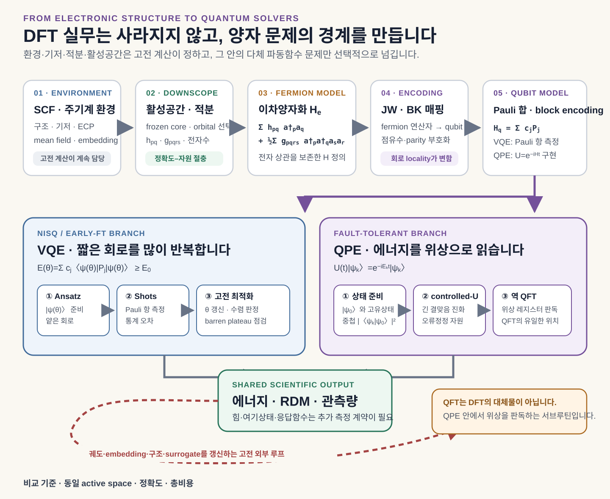
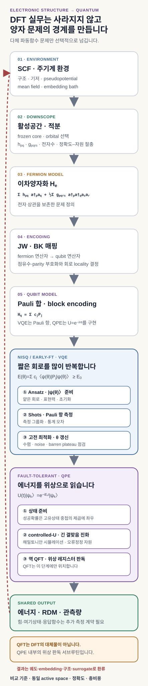
2. Fermion 문제를 qubit 연산으로 번역합니다
전자 점유수는 0과 1이므로 qubit에 자연스럽게 대응해 보이지만, fermion 생성·소멸 연산자는 반교환 관계를 보존해야 합니다. Jordan–Wigner mapping은 앞선 orbital의 parity를 Z string에 기록합니다. Bravyi–Kitaev mapping은 점유수와 parity 정보를 tree 구조로 나누어 spin-orbital 수 n에 대한 한 fermion 연산자의 최악 locality를 O(n)에서 O(log n)로 낮춥니다. 다만 실제 gate 수는 orbital ordering, symmetry tapering, hardware connectivity와 compiler에 달려 있으므로 작은 문제에서 어느 mapping이 항상 짧다고 말할 수는 없습니다. Seeley·Richard·Love의 원 연구는 이 변환을 전자구조 Hamiltonian에 구체적으로 적용했습니다.
Mapping 뒤에는 서로 교환하지 않는 Pauli string의 합이 남습니다.
일반적인 two-body Hamiltonian은 factorization 전 O(K⁴)개의 계수를 가질 수 있습니다. Mapping 뒤에도 이 규모는 남습니다. Low-rank factorization, symmetry reduction, term grouping과 측정 전략이 전체 자원량을 결정합니다.
3. VQE는 짧은 회로를 많이 측정해 상태를 찾습니다
VQE는 Hartree–Fock determinant 또는 다중구성 reference |φ_ref⟩에서 시작합니다. Ansatz, 즉 탐색할 trial wavefunction의 형태를 매개변수 회로 U(θ)로 정하고, Pauli 항의 expectation value를 측정한 뒤 고전 optimizer가 θ를 갱신합니다.
VQE 최초 실험의 중요한 전환은 긴 coherent time evolution을 비교적 짧은 상태 준비 회로와 반복 측정으로 바꾼 데 있습니다. UCC 계열 ansatz는 전자 excitation 구조를 보존하지만 orbital 수와 excitation rank에 따라 gate 수가 빠르게 늘어납니다. Hardware-efficient ansatz는 회로를 줄일 수 있지만 전자수·spin·size consistency와 화학적 해석성을 잃을 수 있습니다. ADAPT-VQE는 필요한 operator를 순차적으로 고르는 대신 후보 gradient를 측정하는 비용을 더 냅니다.
Energy 측정도 한 번의 readout이 아닙니다. 동일한 회로를 반복 실행하는 횟수를 shots라고 부릅니다. Pauli 항을 독립 표본화하는 기본 구조에서는 목표 표준오차 ε에 필요한 shots가 대체로 1/ε²에 비례합니다. Huggins 등의 측정 연구는 low-rank factorization과 basis rotation grouping으로 조사한 계에서 측정 횟수를 크게 낮췄지만, 회로 반복·분산·정밀도의 거래관계는 남았습니다. Geometry마다 수십·수백 번 optimizer가 에너지를 다시 요청한다면 단일-point 데모의 비용을 그대로 해석할 수 없습니다.
VQE의 잠재적 이득은 QPU가 고전 tensor network나 state-vector 방법으로 contraction하기 어려운 entangled circuit state를 준비하고 그 관측량을 직접 표본화하는 데 있습니다. 그러나 회로는 고전적으로 어렵게 모사될 만큼 복잡하면서도 실제 장치의 noise를 견딜 만큼 얕아야 합니다. 이 두 조건은 서로 반대 방향으로 작용합니다. VQE에는 일반적인 지수 speedup 보장이 없으며, ansatz bias·optimizer·shots·오류완화를 포함한 문제별 비교로 이득을 확인해야 합니다.
4. QPE는 준비된 상태의 에너지를 위상으로 읽습니다
QPE는 optimizer가 상태를 찾아가는 방법이 아닙니다. 목표 고유상태와 겹치는 초기상태가 먼저 필요합니다. 초기상태와 시간진화 operator를 다음과 같이 쓰면, Hamiltonian의 에너지가 회전 위상에 기록됩니다.
실제 구현은 U=exp[-i(H-E_ref)t]처럼 energy shift와 evolution time을 정해 목표 spectrum이 하나의 2π phase 구간에 들어가도록 합니다. 이 범위를 잡지 않으면 서로 다른 에너지가 같은 phase로 접히는 aliasing이 생길 수 있습니다. 표준 QPE에서는 controlled-U, controlled-U², controlled-U⁴처럼 더 긴 진화를 적용하고 inverse QFT로 누적 위상을 이진수로 읽습니다. QFT가 분자 Hamiltonian을 푸는 것이 아니라, 이미 기록된 phase를 판독합니다.
이상적인 QPE는 에너지 정밀도 ε에 대해 coherent evolution 또는 query가 O(1/ε)로 증가합니다. 독립 Pauli 표본평균의 O(1/ε²)와 다른 지점입니다. 이는 state preparation·block encoding·오류보정 전의 정밀도 의존성 비교이며, qubitization의 실제 query에는 Hamiltonian normalization factor가 곱해집니다. 또한 FCI coefficient vector를 모두 저장하고 대각화하지 않고도 determinant 중첩에 Hamiltonian evolution을 적용할 수 있습니다. Aspuru-Guzik 등의 초기 분자 QPE 연구는 이 경로를 물과 LiH에 대해 구성했습니다.
실제 자원은 QFT보다 Hamiltonian simulation이 좌우합니다. Product formula(Trotterization), linear-combination-of-unitaries, qubitization 가운데 무엇을 쓰는지, 적분을 어떻게 factorize하는지에 따라 gate 수가 달라집니다. Block encoding은 정규화한 Hamiltonian H/λ를 더 큰 unitary 행렬의 한 block으로 구현하는 방법입니다. Qubitization은 각 고유값을 quantum walk의 회전 위상으로 바꾸며, QSP(Quantum Signal Processing)는 위상각의 연속을 조절해 시간진화나 spectral filter에 필요한 다항함수를 구현할 수 있습니다. QPE는 선택한 Hamiltonian simulation 또는 quantum walk가 만든 고유위상을 에너지로 읽습니다. 대표적인 qubitization 기반 경로는 integral → block encoding → qubitization → QPE이며, 필요한 변환에 QSP를 결합할 수 있습니다. QSP와 qubitization은 VQE·QPE와 경쟁하는 별도 전자구조 solver가 아닙니다. Low와 Chuang의 qubitization 연구는 이 oracle model의 대표 경로를 제시합니다. 이 경로의 실제 자원에는 normalization λ, PREPARE·SELECT, 초기상태 overlap과 오류보정 비용이 들어갑니다.
2026년 PRX Quantum의 H₂ 실증은 [[7,1,3]] color code와 실시간 오류정정 절차를 QPE 전자구조 계산에 연결해 계산 fidelity가 개선될 수 있음을 보였습니다. QPE가 자원추정에만 머문 것은 아니지만, 최소 basis의 H₂를 다룬 method demonstration이며 재료 규모의 정확도·비용 우위를 입증한 결과는 아닙니다. 깊은 controlled evolution과 반복 가능한 논리 연산이 필요하다는 장기 하드웨어 조건도 그대로 남습니다.
상태 overlap은 별도의 병목입니다. 바닥상태 weight가 p₀=|α₀|²이면 원하는 결과를 얻기 위한 반복은 대략 1/p₀에 비례합니다. 강상관계에서 Hartree–Fock determinant의 overlap이 지수적으로 작아지면 Hamiltonian simulation의 다항식 scaling만으로는 전체 이득을 설명할 수 없습니다. 2023년 ground-state quantum advantage 분석은 좋은 초기상태를 만들 수 있는 구조가 DMRG·selected CI 같은 고전 방법에도 유리할 수 있어, 일반적인 바닥상태 양자화학의 지수 우위는 아직 입증되지 않았다고 평가했습니다.
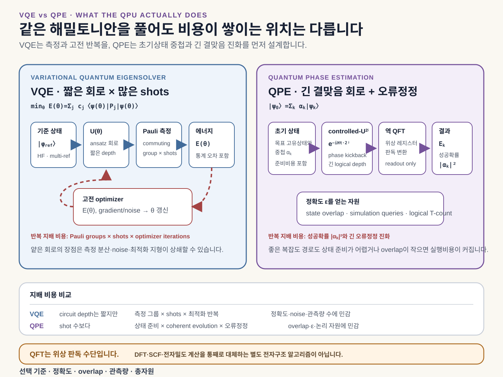
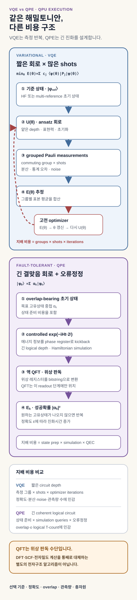
VQE와 QPE를 경쟁 관계로만 볼 필요는 없습니다. VQE나 고전 다중참조 방법으로 만든 approximate state를 QPE의 입력으로 쓰고, QPE가 ansatz energy bias 없이 고유에너지를 읽는 단계형 설계도 가능합니다. 이 경우에도 준비 회로 비용과 target overlap을 따로 측정해야 합니다.
5. 에너지와 필요한 관측량만 고전 outer loop로 돌려보냅니다
QPU의 상태 amplitude를 모두 내려받는 tomography는 지수적으로 비쌉니다. 재료 계산은 다음 의사결정에 필요한 관측량을 먼저 정해야 합니다. 1-RDM γ_pq=⟨a†_p a_q⟩와 2-RDM Γ_pqrs=⟨a†_p a†_q a_s a_r⟩으로 one·two-body energy, 전자·spin density, dipole, orbital gradient와 embedding quantity를 구성할 수 있습니다. 다만 전체 2-RDM 원소 수도 O(K⁴)이므로 모든 것을 읽으면 측정 이득이 사라질 수 있습니다.
실무 흐름은 CASSCF의 macro/micro iteration과 닮습니다. DFT/HF가 geometry·environment·orbital을 만들고, VQE 또는 QPE가 active-space energy와 필요한 RDM을 냅니다. 고전 코드가 orbital rotation, embedding potential, force와 response를 갱신하고 수렴할 때까지 반복합니다. 여기상태에는 vanilla VQE 대신 VQD(Variational Quantum Deflation), qEOM(quantum Equation-of-Motion), multistate VQE 같은 확장이 필요합니다. 상태 순서, transition dipole·oscillator strength, singlet–triplet gap과 geometry dependence가 검증 항목입니다.
2024년 MgO 결함 연구는 periodic range-separated DFT 환경 안의 2전자·5-orbital fragment를 VQE와 qEOM으로 풀었습니다. 원자 배치와 장거리 환경은 고전 계산이, 국소 결함 상태는 작은 양자 회로가 맡았습니다. 고전 FCI로 전 범위를 확인할 수 있는 크기였으며, 이 결과가 입증한 범위는 DFT–QPU 인터페이스의 동작입니다. 문제 크기에 따른 우위는 시험하지 않았습니다.
전자구조 benchmark에는 energy error와 함께 basis·active space, 상태 overlap, 물리·논리 qubit, Pauli term과 shots, circuit depth와 two-qubit gate, 오류완화·오류보정, 전체 wall-clock을 남깁니다. 비교군에는 DMRG·selected CI·CC·FCIQMC처럼 문제 구조를 활용하는 강한 고전 방법을 포함합니다.
전자구조 경로가 내놓은 energy·RDM·transition property는 두 방향으로 사용됩니다. 하나는 대리모델이 학습할 물성값이고, 다른 하나는 선택된 후보를 판정하는 고정밀 기준입니다. 다음 절의 QML이 첫 방향을 맡고, QUBO·QA·QAOA는 그 예측값으로 후보를 고릅니다. 선택된 후보는 다시 두 번째 방향의 전자구조 계산과 실험으로 돌아옵니다.
QML은 전자구조 출력을 학습하며 입력비용과 일반화로 평가합니다
전자 Hamiltonian을 매 후보마다 풀 수 없기 때문에, DFT·post-HF·VQE·QPE에서 얻은 에너지와 관측량은 대리모델의 label로 넘어갑니다. 이 학습 단계가 전자상태 문제와 뒤의 설계 비용함수를 잇습니다. QML은 GNN·GP·kernel과 같은 입력·출력에서 비교하는 선택적 대리모델 후보입니다.
Quantum kernel 가운데 대표적인 fidelity kernel은 고전 descriptor를 양자상태로 인코딩하고 두 상태의 fidelity를 kernel 값으로 사용합니다. Projected kernel은 국소 관측량 등으로 낮은 차원의 특징을 만든 뒤 고전 kernel을 구성합니다. QNN은 parameterized quantum circuit의 측정값을 예측 함수로 학습합니다. 이 방법들은 작은 자료에서 새로운 표현을 제공할 가능성이 있지만, Hilbert space가 지수적으로 크다는 사실만으로 예측 우위가 생기지는 않습니다.
Havlíček 등의 2019년 실험은 양자 feature space를 이용한 분류를 보였지만 실용 재료 자료에서의 우위 증명은 아니었습니다. 2021년 Power of Data 연구는 주어진 자료에서 고전 모델이 양자 모델의 예측을 배울 수 있는지까지 봐야 한다고 설명합니다. 회로가 고전적으로 시뮬레이션하기 어렵다는 사실과 실제 예측 이득은 서로 다른 주장입니다.
입력 비용도 빠뜨릴 수 없습니다. 고전 벡터를 amplitude나 angle로 인코딩하는 회로, N개 표본의 kernel matrix를 측정하는 횟수, 유한 shots의 통계오차가 전체 비용에 들어갑니다. 표현력이 높은 회로가 항상 유리한 것도 아닙니다. 2018년 barren plateau 연구는 무작위 변분 회로에서 gradient가 qubit 수에 따라 지수적으로 작아질 수 있음을 보였고, 2024년 quantum kernel 집중 연구는 embedding, entanglement, global measurement와 noise가 서로 다른 입력의 kernel 값을 구분하기 어렵게 만들 수 있음을 보였습니다.
재료 대리모델에 QML을 넣는다면 같은 scaffold 또는 composition split을 사용해야 합니다. GNN, Gaussian process, boosting, classical kernel에 같은 자료 수와 hyperparameter budget을 주고, 평균오차와 함께 계열 밖 예측과 불확실성 보정을 비교합니다. QPU 호출과 encoding을 포함한 비용에서 이득이 남지 않으면 고전 모델이 기준 모듈로 남습니다.
후보를 만드는 표본추출과 고르는 최적화는 다른 문제입니다
생성·표본추출과 최적화는 모두 여러 bitstring을 내놓을 수 있지만 목적이 다릅니다. 생성모델은 목표 자료의 분포를 배우거나 다양한 후보를 표본화합니다. 최적화는 주어진 비용함수를 낮추는 제약 만족 해를 찾습니다. 낮은 에너지 표본이 많이 나왔다는 사실만으로 목표 분포를 잘 학습했다고 말할 수 없습니다.
생성·표본추출은 분포 충실도를 묻습니다
QCBM은 회로가 만든 Born probability를 학습하고, QBM은 Hamiltonian의 Gibbs 분포를 모델링합니다. 고전 RBM의 표본추출을 양자 어닐러에 맡기는 방식은 또 다른 범주입니다. 세 방법을 모두 “양자 생성모델”로 뭉치면 무엇이 개선됐는지 알기 어렵습니다.
2019년 QCBM 연구는 작은 합성 분포에서 shallow circuit의 생성 학습을 실증했습니다. 분자 설계에서는 양자 회로가 latent prior 일부를 맡고 encoder, decoder, validity 검사와 property model은 고전적으로 남는 경우가 많습니다. 2023년 annealer-assisted 분자 생성 연구도 이런 hybrid 구조를 보였지만, 유효성 손실과 접근·학습비용 때문에 양자 생성 우위를 입증한 결과로 읽을 수는 없습니다.
평가 지표는 분포 수준에 둡니다. objective의 최솟값만으로는 충분하지 않습니다. held-out likelihood 또는 적절한 divergence, mode coverage, 유효·고유·합성 가능 후보 비율, effective sample size와 property-conditioned hit를 함께 봅니다. 양자 sampler의 표본이 정확한 Boltzmann 분포라는 가정도 effective temperature와 freeze-out 조건 아래에서 따로 검증해야 합니다.
여기까지는 어떤 후보 분포를 만들 것인가의 문제입니다. 이제 생성모델이나 데이터베이스가 만든 후보 집합을 고정하고, 제한된 계산·실험 예산으로 무엇을 먼저 검증할지 고르는 이산 최적화로 넘어갑니다.
설계 선택은 물성값과 제약을 비용 Hamiltonian으로 바꿉니다
VQE·QPE와 QA·QAOA를 같은 “에너지 최소화”로 묶으면 계산 대상이 흐려집니다. 전자구조 Hamiltonian H_e의 바닥상태는 correlated electronic state이고, 그 고유값이 전자 에너지입니다. 반면 QUBO에서 만든 cost Hamiltonian H_C의 바닥상태는 대리모델 점수와 제약 penalty가 가장 낮은 설계 bitstring입니다. 이 energy는 실제 물질의 전자 에너지가 아니라 후보의 목적함수 값입니다.
DFT·TDDFT·VQE·QPE가 만든 에너지, gap, 전하분포와 transition property는 이 두 번째 단계에서 자료나 label로 쓰입니다. 연구자는 치환기 위치, donor·acceptor·dopant 선택, 조성 구간, 공정 조건 또는 다음 실험 batch를 x_i∈{0,1}로 정의합니다. 이 시점부터 문제는 파동함수 계산이 아니라 제한된 예산에서 좋은 조합을 고르는 이산 의사결정입니다.
QUBO는 물성 대리모델과 제약을 하나의 비용함수로 묶습니다
QUBO(Quadratic Unconstrained Binary Optimization)는 이진 변수의 선형·이차 항으로 목적함수를 쓰는 형식입니다. 양자 알고리즘이 아닙니다. 같은 QUBO를 exact enumeration, branch-and-bound, CP-SAT·MILP, simulated annealing, tabu search, parallel tempering, GPU Ising solver, QA와 QAOA가 풀 수 있습니다.
Factorization machine처럼 단일 선택 효과와 pair interaction을 이미 2차식으로 예측하는 대리모델은 QUBO와 직접 연결됩니다. OLED라면 donor와 acceptor를 각각 하나씩 고르는 제약, 함께 쓰지 못하는 조합, 합성비용과 예측 효율을 하나의 식에 넣을 수 있습니다. 하지만 GNN·DFT 결과를 2차 surrogate로 근사했다면 solver 오차보다 정식화 오차가 먼저 커질 수 있습니다.
정식화에는 숨은 자원도 있습니다. 부등식에는 slack bit가, 3차 이상 상호작용의 quadratization에는 ancilla가 추가될 수 있습니다. 연속 조성은 여러 bit로 이산화해야 하고, one-hot encoding은 범주 수만큼 변수를 늘립니다. QUBO의 최저점이 원래 고정밀 평가함수에서도 후보 순서를 보존하는지 확인하기 전에는 solver 비교가 의미를 갖기 어렵습니다.
QUBO를 Ising으로 바꾸면 QA와 QAOA가 같은 비용함수를 받습니다
x_i=(1-z_i)/2, z_i∈{-1,+1}로 치환하면 QUBO는 Ising 에너지로 바뀝니다. 이를 qubit operator로 쓰면 모든 항이 computational basis에서 대각이고 서로 commute합니다.
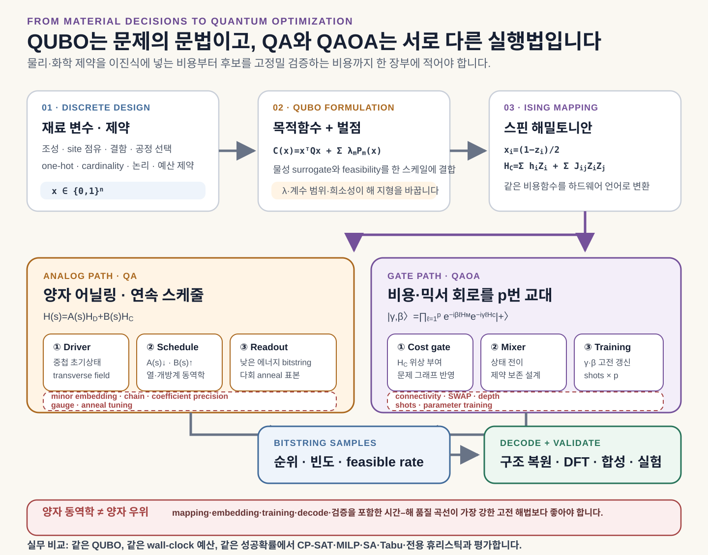
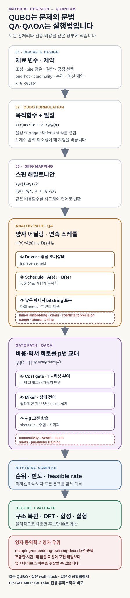
QA는 transverse field를 줄이며 낮은 에너지 해를 표본화합니다
Quantum annealing은 transverse-field driver에서 시작해 문제 Hamiltonian의 비중을 점차 높이는 analog 동역학입니다.
Transverse field가 만드는 quantum fluctuation과 tunneling은 높고 폭이 좁은 장벽에 갇힌 상태가 다른 basin으로 이동하도록 도울 수 있습니다. Kadowaki와 Nishimori의 원 연구는 transverse Ising model로 이 생각을 제시했고, 2016년 multiqubit tunneling 실험은 의도적으로 만든 문제에서 여러 qubit의 collective tunneling이 계산 과정에 참여함을 보였습니다. 그 논문 자체도 quantum speedup을 확립한 것은 아니라고 선을 그었습니다. 터널링은 메커니즘의 증거이지 종단 이득의 증거가 아닙니다.
실제 annealer는 유한 온도와 잡음에 결합된 open system입니다. Thermal excitation·relaxation이 일어나며, 어닐링 후반에는 분포가 사실상 고정되는 freeze-out도 생깁니다. 한 번의 read는 정답이 아니라 낮은 에너지 표본 하나를 냅니다. 논리 QUBO graph가 QPU topology와 맞지 않으면 변수 하나를 physical-qubit chain으로 만드는 minor embedding이 필요합니다. Chain strength가 약하면 chain break가 늘고, 너무 강하면 계수를 rescale하면서 작은 물성 차이가 analog control error에 묻힙니다. 조밀한 pair model에서는 수천 physical qubit이 수십 개 논리 변수로 줄어들 수도 있습니다.
QAOA는 비용 위상과 mixer의 간섭으로 확률분포를 바꿉니다
QAOA는 gate-model 장치에서 cost evolution과 bitstring 사이 전이를 만드는 mixer Hamiltonian의 evolution을 p회 번갈아 적용합니다. 고전 optimizer가 2p개의 각도를 바꾸며 낮은 평균 비용을 찾고, 마지막 회로를 반복 측정해 후보 bitstring을 얻습니다.
Farhi·Goldstone·Gutmann의 원 논문에서 approximation quality는 depth p에 따라 개선될 수 있지만 회로 깊이도 함께 증가합니다. 각 QUBO edge의 ZZ evolution에는 entangling gate가 필요하고, hardware에 없는 연결에는 SWAP routing이 더해집니다. p가 커지면 표현력과 함께 two-qubit error, shots, parameter optimization과 compilation 비용도 증가합니다. 낮은 p에서는 회로의 국소성 때문에 멀리 떨어진 제약 구조를 충분히 반영하지 못할 수 있습니다. 실제로 Bravyi 등의 연구는 특정 MaxCut 계열에서 모든 constant-depth 표준 QAOA보다 강한 고전 알고리즘이 나은 한계를 보였습니다.
제약은 큰 penalty로 넣는 방법 외에 feasible subspace를 보존하는 mixer로 처리할 수도 있습니다. Hamming weight나 one-hot 조건을 보존하는 XY·swap mixer는 무효 공간을 줄이는 대신 회로와 routing을 복잡하게 만듭니다. QAOA의 장점은 superposition 자체가 아니라 문제 구조와 mixer가 맞을 때 constructive interference로 유용한 해의 확률을 집중시킬 가능성에 있습니다.
양자 동역학이 보였다는 것과 양자 이득은 다른 주장입니다
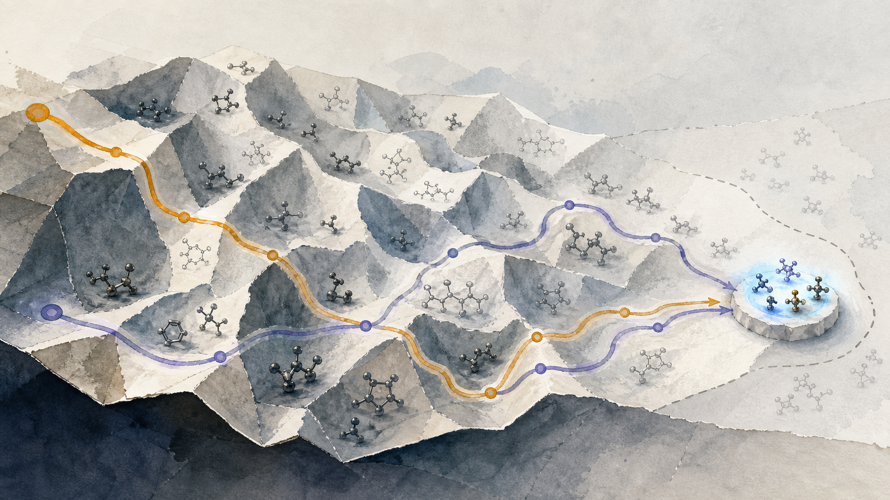
QA·QAOA에는 두 가지 검증이 필요합니다. 먼저 tunneling이나 interference가 실제 동역학에 참여했는지 확인하고, 이어 같은 QUBO 문제군에서 최선의 고전 solver와 time-to-target scaling을 비교합니다. 전처리와 재료 검증까지 포함하는 판단은 다음 절의 양자 이득 장부에서 다룹니다.
비교는 한 개의 작은 QUBO가 아니라 크기, graph density, frustration, constraint ratio가 증가하는 문제군에서 해야 합니다. Exact enumeration이 가능한 크기에서는 optimum과 degeneracy를 확인하고, CP-SAT·MILP·branch-and-bound·SA·Tabu·parallel tempering과 전문 heuristic을 함께 둡니다. QA에는 embedding·programming·reads·decoding·chain repair를, QAOA에는 transpilation·모든 optimizer evaluation·shots·오류완화를 포함합니다.
QA의 scaling 근거도 comparator가 바뀌면 판정이 달라집니다. 2025년 PRL 연구는 quantum annealing correction을 사용한 특정 2차원 spin-glass 문제군에서 PT-ICM보다 1% 이상 optimality gap의 저에너지 표본을 얻는 scaling advantage를 보고했습니다. 그러나 2026년 7월 Physical Review Applied의 재검토는 GPU simulated bifurcation machine이 그 scaling gap을 닫으며 기존 문제 크기로는 robust advantage를 확정하기 어렵다고 분석했습니다. 이 논쟁을 근거로 QA에 어떤 scaling evidence도 없다거나 QA의 우위가 확정됐다고 결론 내릴 수 없습니다. 재료 QUBO에서는 별도의 문제군과 최신 고전 해법으로 다시 검증해야 합니다.
성공확률 p_s인 solver를 반복해 99% 확률로 한 번 이상 목표 품질의 해를 얻는 표본 수는 다음과 같습니다.
N_99 = ceil[ ln(0.01) / ln(1-p_s) ]
그러나 실행시간만 빠른 QUBO 최저점이 실제 물성에서 실패하면 의미가 없습니다. 재료 파이프라인에서는 고정밀 검증 1회당 통과한 고유 후보 수와 전체 wall-clock·비용을 함께 보는 편이 더 직접적입니다. Rønnow 등의 speedup 판정 연구는 comparator 선택과 scaling을 잘못 잡으면 speedup 결론이 바뀔 수 있음을 정리했습니다.
정식화 오차, solver 오차와 재료 오차를 분리합니다
고정밀 평가함수를 F(x), QUBO surrogate를 E_Q(x)라고 두겠습니다. x_opt는 실제 평가의 최적해, x_QUBO는 QUBO 최적해, x_sol은 solver가 찾은 해입니다.
| 오차 | 정의 | 묻는 질문 |
|---|---|---|
| 정식화 regret | F(x_QUBO) - F(x_opt) |
QUBO가 원래 재료 문제의 순위를 보존했는가 |
| solver gap | E_Q(x_sol) - E_Q(x_QUBO) |
주어진 QUBO를 얼마나 잘 풀었는가 |
| 종단 regret | F(x_sol) - F(x_opt) |
최종 후보가 실제 평가에서도 좋은가 |
세 해는 원래 문제의 feasible domain 안에 있어야 합니다. 무효해에는 F=∞ 또는 사전에 정한 infeasibility penalty를 적용합니다. 정식화 regret가 크면 QA나 QAOA가 QUBO를 정확히 풀어도 좋은 물질을 얻지 못합니다. 계산화학자와 재료전문가가 양자 최적화 연구에서 맡을 가장 중요한 역할은 이 경계를 검증하는 일입니다.
분자 설계의 선행 사례에도 이 구분이 필요합니다. Ajagekar와 You의 2023년 연구는 GraphConv fingerprint, conditional RBM, QUBO와 D-Wave를 연결했습니다. 2026년 Digital Discovery 연구는 고정 CDDD 표현과 선형 예측기를 QUBO에 연결하고 hybrid BQM 해법과 SA를 비교했습니다. 일부 다목적 조건에서 hybrid 해법의 공동 목표 충족률이 높았지만, 문제 분해와 고전 heuristic을 포함하므로 QPU 단독의 우위로 해석할 수 없습니다. 해독 분자의 validity도 51.9–54.1%였고 latent objective와 실제 물성의 차이가 남았습니다.
OLED와 맞닿은 2023년 Alq₃ 중수소 치환 연구는 6개 위치를 6 bit, 즉 64개 조합으로 표현하고 고전 양자화학·factorization machine·Ising cost Hamiltonian·VQE/QAOA를 연결했습니다. 여기서 VQE는 전자구조 Hamiltonian이 아니라 6-qubit 대각 비용 Hamiltonian의 바닥상태를 찾았습니다. 실제 장치의 초기 성공확률은 VQE 0.83, QAOA 0.075였고, QAOA는 측정확률을 이용한 재귀적 변수 제거와 고전 후처리 뒤 약 0.97까지 올라갔습니다. 따라서 이 연구는 계산 단계의 연결 방법과 hybrid reduction의 효과를 보여주는 좋은 PoC이지만 scaling advantage의 증거는 아닙니다.
양자 이득은 표현, 알고리즘, 종단 가치의 세 층을 통과해야 합니다
양자 이득은 세 주장으로 나눠 기록해야 합니다. 큰 상태공간을 표현했다는 것, 명시한 계산모델에서 복잡도가 줄었다는 것, 실제 재료 연구의 시간·비용·성공률이 개선됐다는 것은 각각 별도의 증거를 요구합니다.
- 표현 용량은
nqubit이2ⁿ차원 Hilbert space의 상태를 표현하거나, 여러 bitstring에 amplitude를 둘 수 있다는 뜻입니다. 고정 전자수 물리 sector는C(n,N_e)이며, state preparation과 readout이 비효율적이면 여기서 멈춥니다. - 알고리즘 이득은 명시된 입력 oracle과 정확도 가정에서 gate·query·time complexity가 강한 고전 방법보다 유리하다는 뜻입니다. QPE의 phase accumulation이 대표적인 조건부 사례입니다.
- 종단 이득은 basis·active space, encoding, compilation, QPU 실행, shots, 오류제어, queue, decoding과 고정밀 검증을 모두 포함해 시간·비용 또는 검증 성공률이 개선됐다는 뜻입니다.
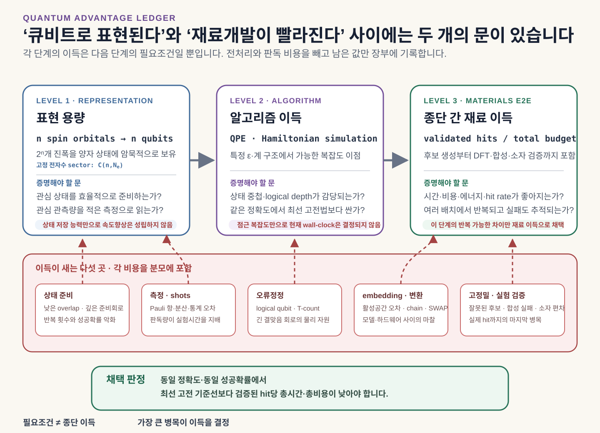
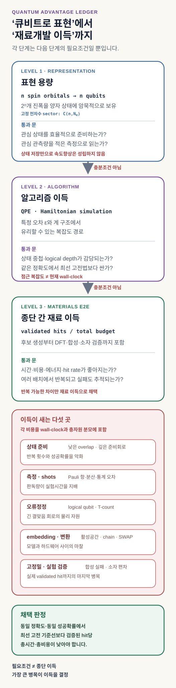
- VQE — 고전적으로 contraction하기 어려운 entangled circuit state의 관측량을 QPU가 표본화할 가능성이 있습니다. Ansatz bias,
1/ε²shots, optimizer와 noise·오류완화가 이득을 지웁니다. 현재는 소형 method·interface 실증 단계이며 일반 speedup 보장은 없습니다. - QPE — Coherent Hamiltonian evolution과 phase estimation이 이상적인
1/ε정밀도 의존성을 제공합니다. 초기상태 overlap, block encoding, 긴 회로와 오류보정이 조건입니다. 효율적 state preparation을 전제로 한 알고리즘 이득 후보입니다. - QUBO — 이득을 만드는 알고리즘이 아니라 여러 solver에 같은 문제를 전달하는 표현입니다. Quadratization, ancilla, penalty와 surrogate 왜곡을 포함해 정식화 품질을 평가합니다.
- QA — Transverse-field dynamics와 문제 지형에 따른 tunneling이 가능한 메커니즘입니다. 특정 합성 spin-glass의 근사 저에너지 표본에서 scaling 주장이 나왔지만 더 강한 GPU 고전 해법이 격차를 닫은 재검토도 있습니다. 최소 gap, 온도·freeze-out, minor embedding, coefficient precision과 comparator를 포함한 문제군 scaling이 필요합니다.
- QAOA — Cost phase와 mixer interference, 문제 맞춤 feasible mixer가 좋은 해의 확률을 집중시킬 수 있습니다. Depth·routing·shots, noise와 parameter learning을 포함한 finite-depth 이득은 문제별 검증 대상입니다.
- QML·양자 생성 — 고전적으로 모사하기 어려운 feature map 또는 분포가 실제 재료 예측과 생성에 유용한지를 시험합니다. Data loading, kernel concentration, trainability와 validity를 포함해 실제 재료 split과 분포 지표에서 검증해야 합니다.
전자구조에서는 물리 문제가 본래 양자라는 점 때문에 큰 상태공간을 담는 표현 용량의 출발이 분명합니다. 그래도 모든 amplitude를 읽을 수 없고, 좋은 초기상태를 만들지 못하면 계산 이득으로 이어지지 않습니다. 이산 최적화는 반대로 고전 bitstring 문제입니다. QA·QAOA의 잠재 이득은 양자 표현 자체보다 특정 문제 구조에 맞는 동역학과 간섭에서 생겨야 합니다.
총비용은 다음 범위를 빠짐없이 기록합니다.
T_total = T_preprocess + T_encode + T_compile + T_queue
+ T_quantum + T_measure + T_postprocess + T_validate
전자구조에서는 같은 정확도의 DMRG·selected CI·CC·FCIQMC와, 최적화에서는 CP-SAT·MILP·SA·Tabu·parallel tempering과 비교합니다. 문제 크기에 따른 scaling과 동일 검증예산당 통과 후보에서 교차가 확인돼야 양자 이득이라는 결론에 가까워집니다.
오류보정 이후의 장기 확장: 불확실성 계산
Active learning과 robust design에서는 후보의 평균 성능만큼 실패확률과 기대효용이 중요합니다. Quantum Amplitude Estimation(QAE)은 분포를 양자상태로 준비하고 utility를 가역적으로 계산하는 oracle 회로가 있을 때 Monte Carlo 기대값 추정의 query 수를 거의 제곱근 수준으로 줄일 이론적 가능성이 있습니다. Montanaro의 2015년 연구는 이 일반적인 quantum Monte Carlo 경로를 제시했습니다.
그러나 이 이득은 oracle model 안의 이야기입니다. 고전 DFT, 복잡한 neural surrogate나 실제 실험을 coherent reversible oracle로 바꾸는 비용이 크면 장점이 사라집니다. 긴 Grover power와 오류보정도 필요합니다. 따라서 QAE는 현재 PoC의 중심보다, 이미 빠른 확률모형을 양자회로로 준비할 수 있는 fault-tolerant 시기의 불확실성 엔진으로 두는 편이 정확합니다.
성숙도는 증거 단계와 하드웨어 시기를 함께 봐야 합니다
양자 알고리즘을 한 줄의 순위로 놓을 수는 없습니다. VQE·QML·QAOA는 현재 장치에서 작은 실험을 할 수 있지만 noise와 학습성 문제가 큽니다. QPE는 오류정정된 초소형 분자 method demonstration까지 진행됐으나 재료 규모의 실행은 오류보정 하드웨어와 큰 논리 자원에 의존합니다. QAE는 reversible oracle을 포함한 장기 알고리즘입니다. 따라서 알고리즘의 약속과 end-to-end 검증 수준을 분리해야 합니다.
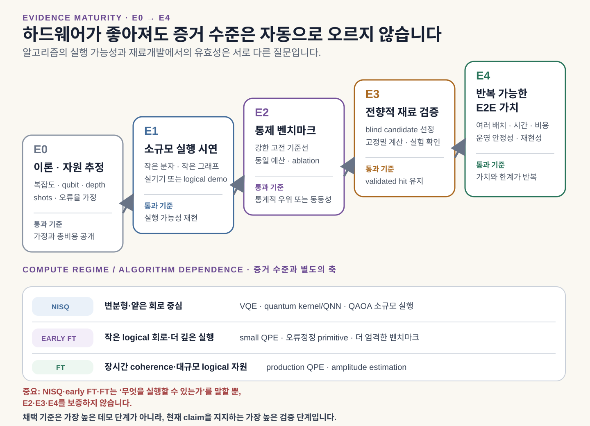
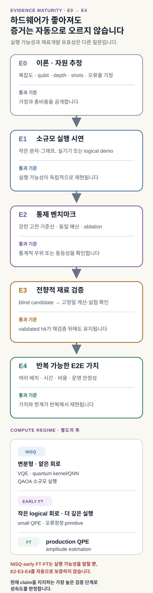
| 후보 모듈 | 현재 확인 가능한 증거 | 가까운 검증 질문 | 장기 조건 |
|---|---|---|---|
| VQE·qEOM | 작은 molecule·active space, embedding PoC | 오류완화 결과가 강한 active-space 해법과 같은 오차·비용에서 경쟁하는가 | 더 낮은 error, 측정 효율, 확장 가능한 ansatz |
| QPE 계열 | 자원 추정과 오류정정된 H₂ method demonstration | 좋은 초기상태, 선택한 Hamiltonian simulation과 관측량 측정을 포함한 전체 자원이 현실적인가 | 재료 active space를 감당하는 fault-tolerant logical qubit와 긴 coherent circuit |
| quantum kernel·QNN | 소형 자료·hardware 또는 simulator PoC | 실제 재료 split에서 고전 모델보다 불확실성 보정·계열 밖 예측 이득이 남는가 | 효율적 encoding, 학습 가능성, 측정 scaling |
| QCBM·QBM generator | 작은 분포·hybrid generator PoC | 분포 충실도와 유효 후보가 고전 생성모델보다 나은가 | scalable training과 검증 가능한 generative advantage |
| annealer-assisted sampler | 작은 RBM·latent 표본추출 PoC | 같은 energy model에서 목표 분포와 전체 비용이 MCMC보다 나은가 | 보정 가능한 표본 분포와 반복 가능한 이득 |
| QA·QAOA 최적화 | 작은 QUBO·도메인 PoC와 특정 합성 문제군의 논쟁 중인 근사 scaling 결과 | 최신 고전 해법, embedding·compilation·후처리를 포함해 재검증 통과 후보가 늘어나는가 | 문제 구조와 hardware가 맞는 반복 가능한 재료 benchmark |
| QAE | oracle/query 복잡도 근거 | materials uncertainty를 reversible oracle로 준비할 수 있는가 | fault-tolerant coherent oracle |
이 리뷰에서 확인한 공개 근거만 보면, 어느 모듈도 재료 역설계 전반의 양자우위를 입증했다고 보기 어렵습니다. 모듈별 증거 수준은 서로 다르므로, 작은 계산 계약을 고정하고 증거 사다리의 다음 한 칸을 목표로 삼아야 합니다.
청색 OLED는 네 계산 모듈의 경계를 한 사례에서 드러냅니다
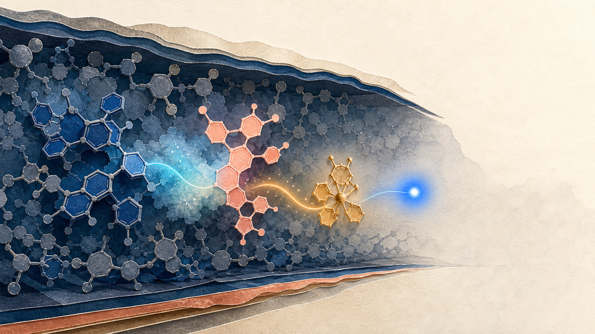
청색 OLED는 높은 여기 에너지, 전하 균형, 에너지 전달, 박막 배열과 열화가 얽혀 있습니다. 계산 화면에서 좋아 보이는 분자도 이웃 분자와 전하를 주고받는 방식이 달라지거나, 여기상태와 packing이 예상과 어긋나면 소자에서 빛을 잃습니다. 높은 T₁이나 적절한 HOMO/LUMO만으로 효율과 수명을 함께 설명하기 어렵습니다.
Exciplex-forming co-host형 PhOLED에서는 donor와 acceptor host가 만날 때 charge-transfer 여기상태가 생기고, 그 에너지가 별도의 phosphorescent dopant로 전달됩니다. 2022년 Nature Photonics 연구처럼 이 구조의 실제 소자는 세 구성요소와 계면, 전하 균형을 함께 다룹니다. host와 dopant 두 항목만 적은 표현으로는 이 유즈케이스의 설계 대상을 정확히 담기 어렵습니다.
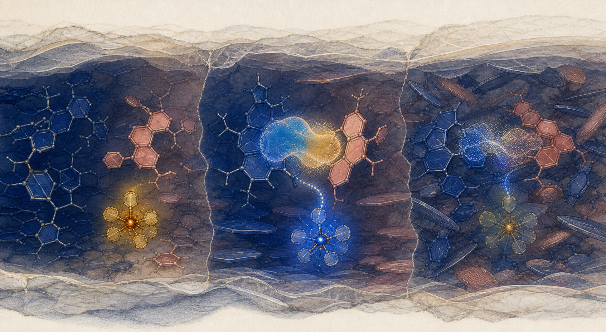
이 유즈케이스에서 네 모듈은 다음처럼 나뉩니다.
| OLED 설계 질문 | 양자 후보 모듈 | 반드시 남는 고전·실험 계층 |
|---|---|---|
| 작은 active space의 S₁·T₁, charge-transfer와 다중참조 상태 | VQE·qEOM, 장기적으로 QPE | geometry·환경 DFT/TDDFT, embedding, spectroscopy |
| 분자·donor–acceptor pair·소자 조건에서 물성 예측 | quantum kernel·QNN | GNN·GP·boosting 기준선, 불확실성 보정, 계열 밖 split |
| 목표 조건에 맞는 scaffold·fragment 후보 분포 | QCBM·QBM hybrid generator | fragment grammar, decoder, validity·합성 가능성 검사 |
| 고정된 energy model에서 latent 표본 생성 | annealer-assisted sampling | Gibbs·MCMC·parallel tempering, 분포 보정 |
| co-host·dopant·치환기 또는 실험 batch 선택 | QUBO를 푸는 QA·QAOA | enumeration·CP-SAT·SA·Tabu·BO, 고정밀 재계산 |
2021년 TADF 양자계산 연구는 이 분업을 일찍 보여줬습니다. 구조와 큰 환경은 고전 TDDFT/TDA가 맡고, HOMO–LUMO의 매우 작은 active space에서 qEOM-VQE와 VQD로 S₁·T₁을 계산했습니다. 의미 있는 방법 실증이지만 전체 OLED 전자구조나 소자 계산을 대체한 것은 아닙니다.
고전 역설계도 이미 높은 기준선을 세웠습니다. 2018년 blue PhOLED host 연구는 약 6,000개의 DFT 자료에서 생성모델을 학습하고, 생성 후보를 DFT로 다시 계산한 뒤 세 물질을 합성·측정했습니다. 2025년 MR-TADF 연구와 blue TADF host 가상선별 연구는 후보 선별을 합성 또는 소자 제작으로 연결했습니다. 2026년 JACS 연구는 green PSF OLED용 exciplex host를 다뤘습니다. 청색 OLED와 인접한 이 연구는 ML 선별을 host 합성과 소자 검증까지 연결한 비교 기준입니다.
이 연구들의 발광 구조, 색, 소자 조건과 평가 지표는 서로 다르므로 최고 EQE만 한 줄에 놓고 비교해서는 안 됩니다. 양자 모듈이 겨뤄야 할 상대도 논문 사이의 최고 수치가 아닙니다. 같은 설계공간, 목적함수와 검증 예산을 받은 강한 고전 모듈입니다.
벤치마크는 변환 정확성, scaling, blind test, 폐루프 반복으로 올라갑니다
네 양자 모듈을 동시에 넣으면 결과가 좋아져도 원인을 알 수 없습니다. 첫 PoC는 하나의 입출력 계약을 고정하고 나머지를 같은 고전 파이프라인으로 유지해야 합니다.
검증된 geometry와 basis, SCF checkpoint, localized orbital, FCIDUMP 형식 적분, DMRG·selected CI 기준값, 물성 DB와 실험 검증 기준은 그대로 재사용합니다. 새로 필요한 역량은 이 객체를 qubit Hamiltonian 또는 QUBO로 변환하고, 회로·측정·solver 비용을 같은 오차 예산에서 기록하는 일입니다.
전자구조 트랙의 전환 순서
- DFT·TDDFT가 어려워하는 다중참조 상태, bond breaking, transition-metal center, defect state 또는 CT state ordering을 한 가지 고릅니다.
- Geometry, basis·pseudopotential, embedding과 active space를 고정하고 one·two-electron integral을 보존합니다.
- 가능한 범위에서 FCI·DMRG·selected CI·CASSCF/NEVPT2 등 가장 강한 고전 기준값을 만듭니다.
- Fermion-to-qubit mapping과 symmetry reduction 뒤 noise-free simulator에서 spectrum, VQE ansatz bias와 QPE initial overlap을 따로 확인합니다.
- VQE hardware PoC에서는 Pauli grouping, shots, optimizer evaluation, gate error와 오류완화 비용을 기록합니다.
- QPE는 오류정정된 H₂ 실증을 method 기준점으로 삼되, 재료 문제에서는 선택한 simulation 경로의 logical qubit·Toffoli/T count와 초기상태 성공확률을 자원추정합니다. Block-encoding·qubitization 경로를 택했다면 normalization과 PREPARE·SELECT 비용도 포함합니다.
- Energy만이 아니라 gap, state ordering, RDM, transition property와 force처럼 downstream 계산이 실제로 쓰는 출력까지 비교합니다.
최적화 트랙의 전환 순서
- 연속변수와 이산변수를 분리하고, 선택·배치·치환·batch scheduling처럼 실제 결정을 나타내는 변수만 QUBO 후보로 둡니다.
- 대리모델과 제약을 QUBO로 옮긴 뒤 작은 문제에서 원래 평가함수와 optimum·candidate ranking을 비교합니다.
- Exact enumeration, CP-SAT·MILP, branch-and-bound, SA·Tabu·parallel tempering을 같은 QUBO와 같은 tuning budget에 연결합니다.
- QA에는 minor embedding, chain break, gauge, programming·readout·decoding을 포함합니다.
- QAOA에는 depth
p, mixer, routing, shots와 고전 optimizer의 모든 호출을 포함합니다. - 최종 순위는 QUBO objective가 아니라 고정밀 재계산 또는 실험을 통과한 후보 수로 다시 정합니다.
Benchmark ladder는 구현 검증에서 반복 가능한 연구가치로 올라갑니다
| 단계 | 전자구조 트랙 | QUBO·QA·QAOA 트랙 | 이 단계에서 주장 가능한 것 |
|---|---|---|---|
| B0 변환 검증 | integral→qubit Hamiltonian이 기준 spectrum을 재현 | QUBO가 원래 objective·constraint를 재현 | 구현과 정식화의 정확성 |
| B1 ideal simulator | VQE ansatz error, QPE overlap·precision 분리 | exact·noise-free QAOA/QA simulation | 이상 알고리즘의 거동 |
| B2 hardware method test | noise·shots를 포함한 작은 active space | embedding·routing을 포함한 작은 instance | 하드웨어 실행 가능성 |
| B3 instance-family scaling | orbital·상관 난도를 체계적으로 증가 | size·density·frustration·constraint ratio 증가 | 제한된 scaling evidence |
| B4 prospective test | 미공개 구조·상태의 blind prediction | 미공개 후보 선택 후 고정밀 재검증 | 도메인 utility |
| B5 closed-loop repetition | 여러 계산 campaign에서 반복 | 여러 설계 batch에서 반복 | 종단 연구가치 |
- 전자구조 트랙은 동일한 geometry와 active space에서 VQE·qEOM을 FCI·DMRG·selected CI와 비교합니다. 에너지, 상태 순서와 관측량, 측정비용을 함께 봅니다.
- 학습 트랙은 동일한 scaffold/pair split에서 quantum kernel·QNN을 GNN·GP·classical kernel과 비교합니다. 불확실성 보정과 계열 밖 성능을 사전 등록합니다.
- 생성·표본추출 트랙은 두 수준을 분리합니다. 종단 생성에서는 같은 자료와 validator 아래에서 QCBM·QBM hybrid generator를 VAE·diffusion·autoregressive model과 비교합니다. 표본추출만 시험할 때는 같은 RBM 또는 energy model을 고정하고 annealer를 Gibbs sampling·MCMC·parallel tempering과 비교합니다.
- 최적화 트랙은 같은 QUBO 또는 명시된 constraint contract를 CP-SAT·MILP·SA·Tabu, QA와 QAOA에 연결합니다. 가능한 작은 문제는 exact enumeration으로 optimum과 gap을 확인합니다.
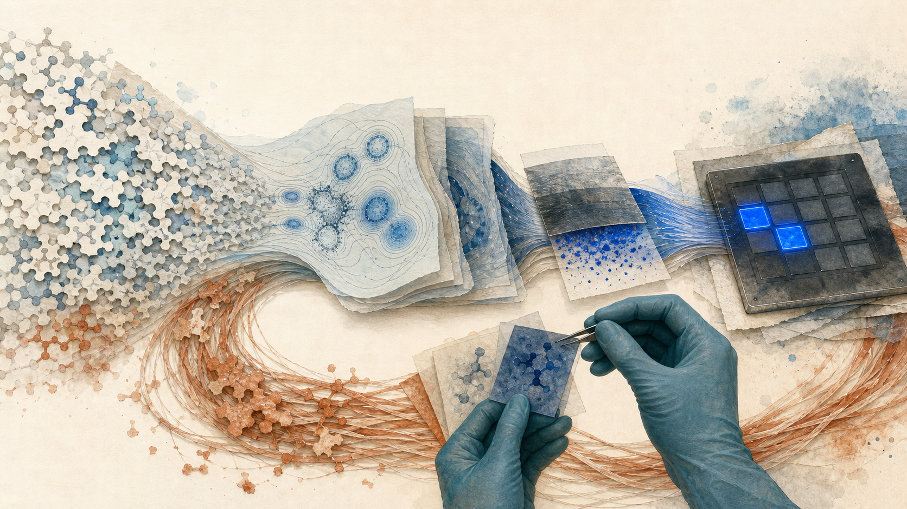
모든 트랙의 공통 지표는 고정밀 평가 또는 실험 1회당 재검증 통과 후보 수입니다. 보조 지표로 전체 경과시간, 비용, 제약 만족률, 다양성, 불확실성 보정과 반복 안정성을 둡니다. QPU 실행시간만 따로 떼어 speedup을 말하지 않으며, 자료 준비, encoding, active-space 선택, embedding·compilation, shots, queue, decoding과 고전 후처리를 포함합니다.
중단 조건도 먼저 정할 수 있습니다. active-space·surrogate·QUBO 근사 오차가 해법 차이보다 크거나, encoding과 측정비용을 포함하면 고전 기준선이 일관되게 우수하거나, 재검증에서 차이가 사라지면 해당 양자 모듈을 제거합니다. 이때 남는 고전 파이프라인과 실패 원인도 완전한 연구 결과입니다.
반대로 여러 seed와 문제 크기에서 개선이 반복되고, 같은 검증 예산으로 더 많은 유효 후보를 남기며, 전체 비용에서도 이득이 유지된다면 증거 사다리의 다음 단계로 이동할 수 있습니다. 결론의 범위는 “이 계산 계약에서 이 양자 서브루틴이 유효했다”로 제한합니다. 이를 양자 파이프라인 전체의 승리로 넓히지는 않습니다.
연구 맥락과 공개 경계
김현중 외 SID 2024 논문은 DFT로 만든 blue TADF 여기상태 자료를 GNN이 학습해 물성을 예측하고 역설계 전략을 뒷받침한 연구입니다. 생성 후보의 합성이나 PhOLED 소자 검증까지 수행한 결과는 아닙니다. DFT·excited-state analysis와 GNN 연구 경험은 이 하이브리드 파이프라인의 데이터·전자구조·학습 모듈을 설계할 기반이 됩니다.
현재 공개 근거에 맞는 제안은 다음 정도입니다.
DFT·양자화학과 GNN 기반 OLED 물성예측 경험을 바탕으로, 재료 역설계의 전자구조·대리모델·생성·이산 최적화 단계를 분리하고 각 단계에서 양자 후보 서브루틴을 강한 고전 기준선과 비교하는 검증형 파이프라인을 설계합니다. 청색 OLED는 여기상태, 분자쌍, 박막과 소자 조건을 함께 요구하는 첫 유즈케이스이며, 양자 모듈의 채택은 고정밀 계산과 실험 검증 뒤에 결정합니다.
공개본에는 연구 질문, 공개 논문, 모듈 인터페이스, 비교 방법과 중단 규칙을 남길 수 있습니다. 회사 내부 분자 구조, 물성 DB, 합성경로, 소자 recipe, 공급사, aging 결과와 미공개 IP는 분리해야 합니다. VQE label, QML advantage, QA·QAOA의 재검증 통과 후보 개선, 생성 후보와 자동 합성 폐루프는 아직 검증된 성과가 아닙니다.
가까운 시기의 공개 제안은 작은 active space, 제한된 학습 자료와 QUBO형 선택 문제의 hybrid PoC에 맞춰집니다. 데이터 계보, 강한 고전 기준선과 실험 검증은 각 양자 모듈의 채택 여부를 판단하는 공통 기준으로 유지합니다.
참고문헌
- Kohn and Sham, Self-Consistent Equations Including Exchange and Correlation Effects
- Peruzzo et al., A variational eigenvalue solver on a photonic quantum processor
- Lee et al., Evaluating the evidence for exponential quantum advantage in ground-state quantum chemistry
- Battaglia et al., Active space embedding with applications in quantum computing
- Low and Chuang, Hamiltonian Simulation by Qubitization
- Zhao et al., Experimental quantum computational chemistry with optimized UCC ansatz
- Dalton et al., Gate errors in VQE for quantum chemistry
- Gao et al., Quantum computing for electronic transitions in TADF emitters
- Havlíček et al., Supervised learning with quantum-enhanced feature spaces
- Huang et al., Power of data in quantum machine learning
- McClean et al., Barren plateaus in quantum neural network training landscapes
- Thanasilp et al., Exponential concentration in quantum kernel methods
- Benedetti et al., A generative modeling approach for shallow quantum circuits
- Gircha et al., Hybrid quantum-classical machine learning for generative chemistry
- Farhi et al., A Quantum Approximate Optimization Algorithm
- Gao et al., Quantum-Classical Computational Molecular Design of Deuterated OLED Emitters
- Ajagekar and You, Molecular design with QC-based deep learning and optimization
- Deguchi and Taki, Property-agnostic molecular inverse design via quantum annealing
- Vuffray et al., Programmable Quantum Annealers as Noisy Gibbs Samplers
- D-Wave binary quadratic and QUBO model documentation
- D-Wave minor-embedding documentation
- Montanaro, Quantum speedup of Monte Carlo methods
- Kim et al., Deep-learning-based inverse design of blue OLED molecules
- Sun et al., Exceptionally stable blue phosphorescent OLEDs
- Kim et al., Machine learning-driven deep-blue MR-TADF molecular design
- An et al., Blue OLED hosts via deep learning and high-throughput screening
- An et al., Machine Learning-Guided Discovery of Sterically Protected High Triplet Exciplex Hosts for Ultra-Bright Green OLEDs
- Kim et al., Machine Learning Strategy Towards Inverse Design of Blue TADF Emitter
- IBM Quantum, Quantum Fourier transform
- Seeley et al., The Bravyi–Kitaev transformation for quantum computation of electronic structure
- Huggins et al., Efficient and noise resilient measurements for quantum chemistry
- Aspuru-Guzik et al., Simulated Quantum Computation of Molecular Energies
- Kadowaki and Nishimori, Quantum Annealing in the Transverse Ising Model
- Boixo et al., Computational multiqubit tunnelling in programmable quantum annealers
- Bravyi et al., Obstacles to Variational Quantum Optimization from Symmetry Protection
- Rønnow et al., Defining and detecting quantum speedup
- Zhou et al., QAOA: Performance, Mechanism, and Implementation on Near-Term Devices
- Yamamoto et al., Quantum Error-Corrected Computation of Molecular Energies
- Munoz-Bauza and Lidar, Scaling Advantage in Approximate Optimization with Quantum Annealing
- Pawłowski et al., Toward quantum scaling advantage in approximate optimization
작성 정보
- 작성자: 김현중
- 최초 작성: 2026-07-11 · 구조·근거·시각 전면 개정: 2026-07-12
- 출발 자료: 개인 CV와 공개 논문, 청색 PhOLED 역설계 PPTX·기술수요 제안, 기존 Deep Research 산출물
- 근거 원칙: peer-reviewed 1차 논문과 공식 기술 문서를 우선하고, 이론·소형 실증·도메인 검증·종단 가치를 분리
- 시각 자료: 관계를 설명하는 원본 편집 일러스트레이션 5종과 desktop/mobile 결정론적 SVG 도식 6종